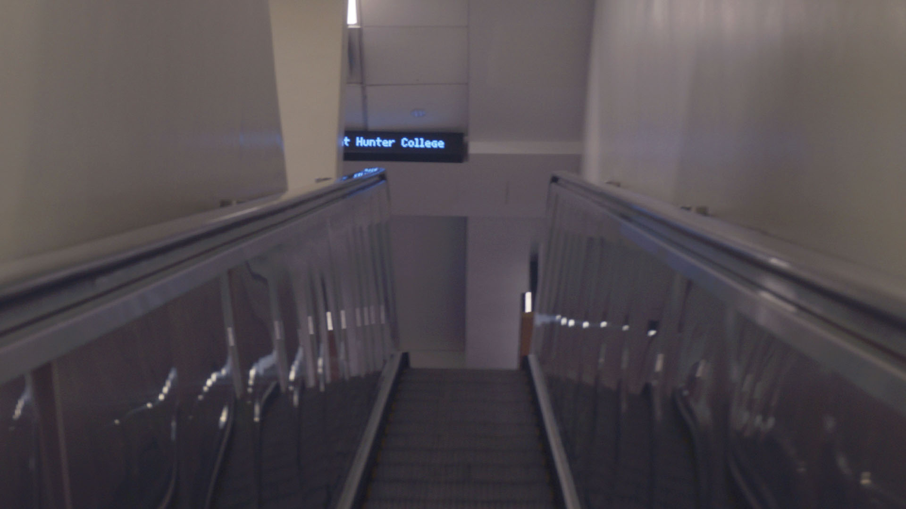

For my first image, I chose to alter the exposure to enhance my image, but also bring life to the photograph with hues and saturated colors like blue and yellow. I overall chose this picture because it seemed as though the picture reflected the statement “we only go up from here” (if we’re talking about a story behind my photograph).This means that there is no going backwards in life, but we have to choose to move forward.
